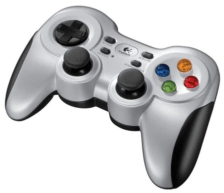

Logitech F710

Геймпад беспроводной Logitech F710 серебристый
4000₽
Заводские данные
- Гарантия продавца / производителя - 24 мес.
- Страна-производитель - Китай
- Гарантия - 24 месяца
Общие параметры
- Тип - геймпад
- Модель - Logitech F710
- Основной цвет - серебристый
- Доп. Цвет - черный
Совместимость
- Поддерживаемые платформы - Android TV, PC
- Поддерживаемые ОС - Windows 7, Windows 8, Windows 10, Windows 11, Windows Vista
Подключение
- Тип - беспроводной
- Интерфейс - радиоканал 2.4ГГц
Управление
- Аналоговые стики - есть
- D-Pad - есть
- Бамперы - есть
- Триггеры - есть
- Трекпад - нет
- Кол-во кнопок - 16
Питание
Доп. Инфо
- Комплектация - USB-ресивер, документация, удлинитель USB
Геймпад Logitech F710 позволит вам избавиться от шнура, насладиться свободой передвижения и игрой без лишних проводов. Достаточно вставить наноприемник в разъем USB, и геймпад будет работать с ПК с минимальными задержками (передача данных осуществляется на частоте 2.4 ГГц). Помимо того, используя Logitech F710, вы получите обратную связь на совершаемые вами в игре действия – устройство вибрирует при толчках, ударах, взрывах и других игровых событиях.
Используя этот геймпад, вы сможете играть в консольные игры, не беспокоясь о скованности движений или недостаточной длине кабеля. Устройством поддерживаются самые распространенные стандарты ввода, в числе которых и XInput, и DirectInput.
Все права защищены ©